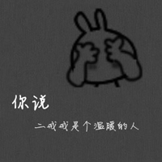
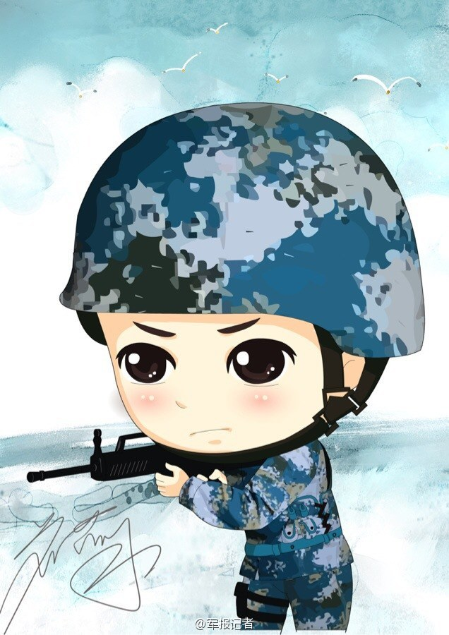

<!--
  Generated template for the FollowPage page.

  See http://ionicframework.com/docs/components/#navigation for more info on
  Ionic pages and navigation.
-->
<ion-header>

    <ion-navbar text-center>
      <ion-title color="primary">我的关注</ion-title>
    </ion-navbar>
  
  </ion-header>
  <ion-content padding>
      <ul class="dp">
         <li>呆瓜</li>
         <li>毛毛</li>
         <li>大壮</li>
         <li>大梅</li>
         <li>兵哥哥</li>
         <li><button ion-button (click)="goto(strPage)">显示全部</button></li>
      </ul>
      <div class="box">
          <div class="touxiang">
               呆瓜
          </div>
          <div class="content">
               <div class="text">
                   <p>倾城真的好甜，哈哈哈哈，强推强推！</p>
               </div>
               <div class="image">
                   
               </div>
          </div>
      </div>
      <div class="box">
          <div class="touxiang">
               毛毛
          </div>
          <div class="content">
              <div class="text">
                  <p>开心开心，成都火锅果然没让我失望！</p>
              </div>
              <div class="image">
                  
              </div>
          </div>
      </div>
  </ion-content>
  